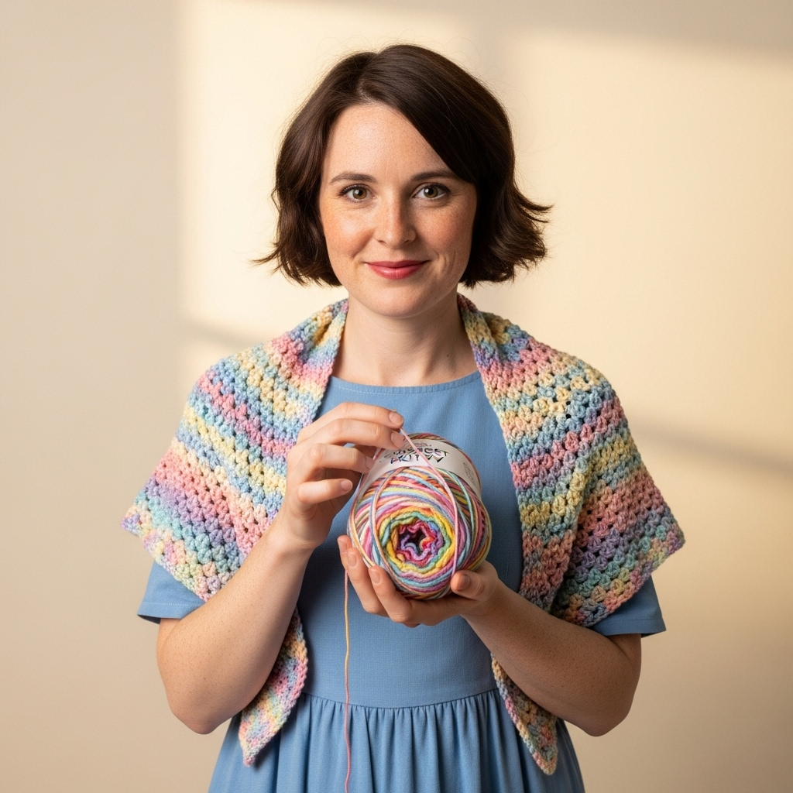

Handmade with Love, Purr-fectly Crafted
Welcome to a world of cozy, cute, and custom crochet creations. From adorable amigurumi to warm blankets, every stitch is made with passion.
Explore Our CreationsFeatured Creations

Our Story
Crochet Kitty started from a simple love for two things: cats and crafting. What began as a hobby has blossomed into a small business dedicated to spreading joy through handmade items. We use high-quality, soft yarn to create durable and adorable products that are perfect for gifts or a special treat for yourself.
Every piece is 100% handmade and filled with love.
Have a Custom Idea?
We love bringing your creative ideas to life! Contact us for custom orders.
Get in Touch